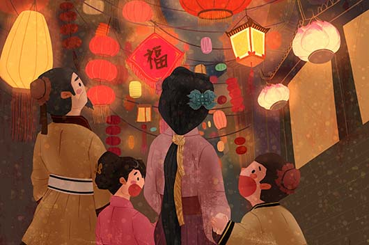
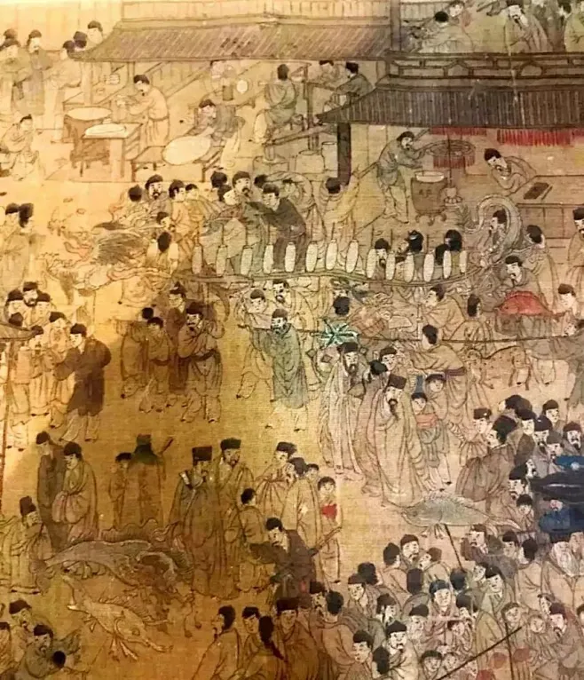
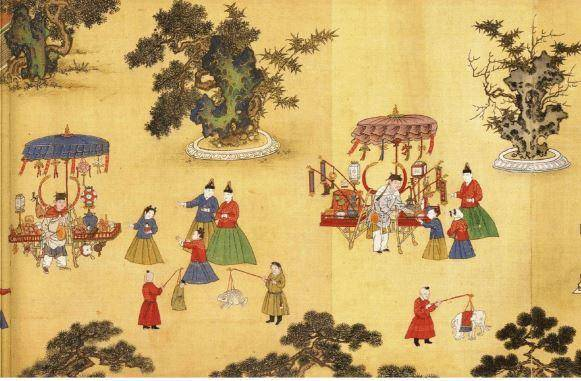
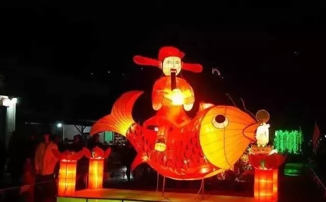
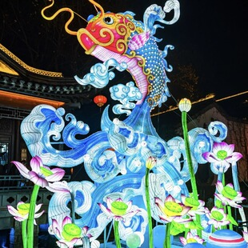
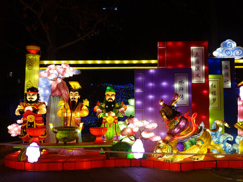

两千年的光影纪事
汉代初创：宫廷与祭祀的火种
花灯的起源可追溯至西汉时期。相传汉明帝提倡佛教，听闻佛教有正月十五僧人观佛舍利、点灯敬佛的做法，便下令这一天夜晚在皇宫和寺庙里点灯敬佛。随着时间的推移，这种佛教礼仪逐渐走出寺庙，演变为民间的节日习俗。当时的灯具多为青铜或陶制，造型古朴，功能主要以实用照明和宗教祭祀为主，但已初具装饰意味。
汉武帝时期，祭祀太一神（宇宙的主宰者）的活动常常在正月十五通宵达旦地进行，祭坛周围点满灯火，这被视为元宵赏灯习俗的真正开端。这些古老的灯火，孕育了中国灯彩艺术的原始基因。

唐宋极盛：火树银花的太平盛世
唐代是中国花灯艺术的第一个巅峰。“金吾不禁夜，玉漏莫相催”，唐代的元宵节实行“放夜”制度，长安城内搭建起巨大的灯轮、灯树，高达二十丈，点燃五万盏灯，皇帝甚至会亲自登上安福门与民同乐。此时的花灯制作工艺突飞猛进，使用了丝绸、琉璃等名贵材料。
宋代的花灯更是走向了平民化与极致繁华。宋朝的灯会时间由唐代的三天延长至五天。周密在《武林旧事》中详细记载了南宋临安的元宵盛况。此时出现了巧夺天工的“无骨灯”、“琉璃灯”以及利用热气流原理转动的“走马灯”。灯谜文化也在宋代正式形成，赋予了花灯更深厚的文人意趣。

明清繁衍：地域流派的百花齐放
明太祖朱元璋建都南京后，为了营造太平盛世的氛围，大力提倡元宵灯会，将灯节延长至十天，并亲自在秦淮河畔下令燃放万盏水灯，使得“秦淮灯彩”名甲天下。明清时期，随着商品经济的发展，全国各地形成了各具特色的花灯流派。
这一时期，泉州的刻纸料丝灯、仙居的针刺无骨花灯、潮州的人物屏灯等南方精细工艺趋于成熟。清末民初，甚至出现了使用玻璃丝和西洋机制颜料的创新之作。民间灯市成为极具活力的文化交易场所，花灯不仅是艺术品，更成了承载着民俗信仰与宗族荣誉的文化符号。

承载的民俗信仰

祈福延寿
在潮汕与闽南地区，“灯”与“丁”同音，正月挂花灯寓意着“添丁进口”、家族人丁兴旺。送灯、迎灯等仪式是宗族社会维系血脉亲情、祈求神明庇佑的重要载体。

辟邪纳吉
传统花灯大量使用大红色彩，并装饰有龙、狮、麒麟等瑞兽图案。古人认为光与火能够驱散邪祟，正月的狂欢灯会不仅是娱乐，也是一场声势浩大的集体傩祭仪轨。

伦理教化
花灯特别是人物屏灯和走马灯，常以《三国演义》、《水浒传》或民间二十四孝故事为题材。在识字率不高的古代，这些花灯承担了向大众普及历史知识与传统伦理道德的功能。